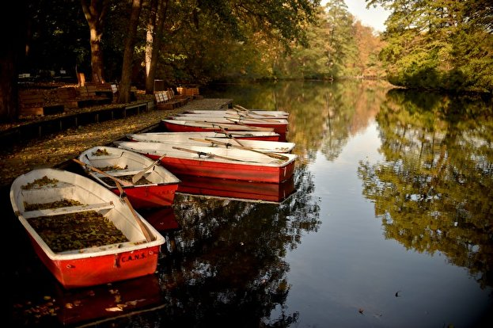
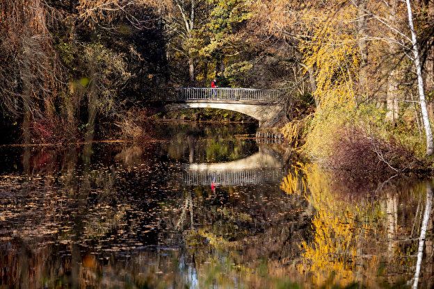
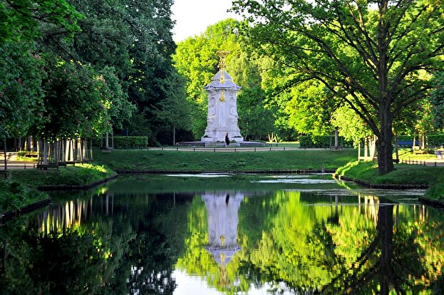
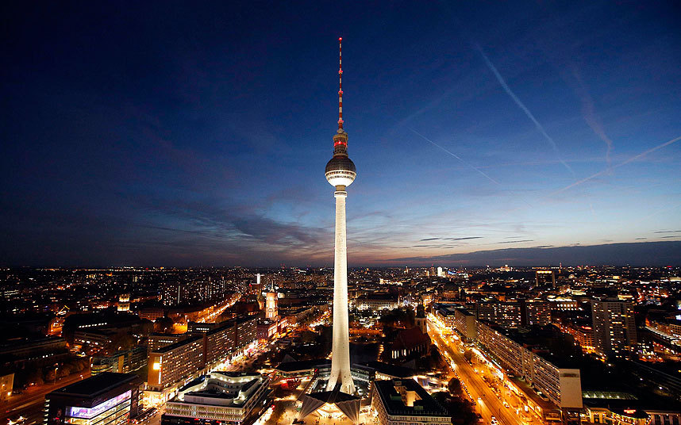
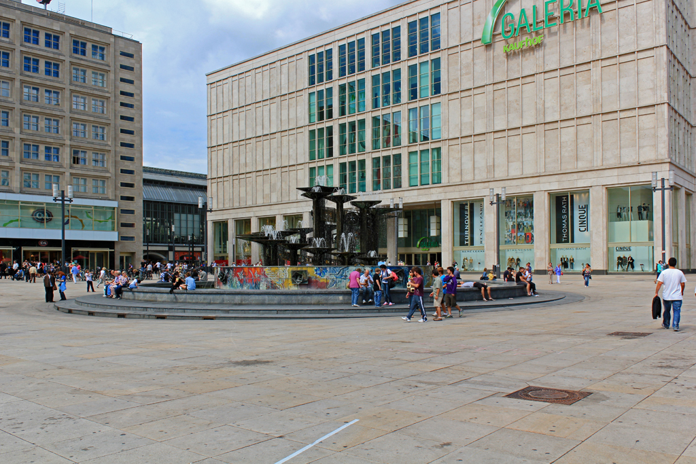
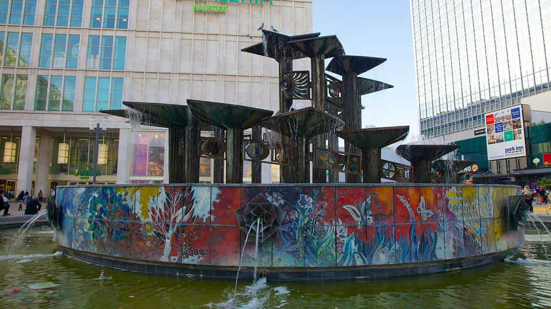

Berlin
Tiergarten



Tiergarten (German for Animal Garden) is a locality within the borough of Mitte, in central Berlin (Germany). Notable for the great and homonymous urban park, before German reunification, it was a part of West Berlin. Until Berlin's 2001 administrative reform, Tiergarten was also the name of a borough (Bezirk), consisting of the current locality (Ortsteil) of Tiergarten (formerly called Tiergarten-Süd) plus Hansaviertel and Moabit. A new system of road and rail tunnels runs under the park towards Berlin's main station in nearby Moabit.
Alexanderplatz




Alexanderplatz is a large public square and transport hub in the central Mitte district of Berlin. The square is named after the Russian Tsar Alexander I and is often referred to simply as Alex, which also denotes the larger neighbourhood stretching from Mollstraße in the northeast to Spandauer Straße and the Rotes Rathaus in the southwest.
With more than 360,000 visitors daily,[1] Alexanderplatz is, according to one study, the most visited area of Berlin, beating Friedrichstrasse and City West.[2] It is a popular starting point for tourists, with many attractions including the Fernsehturm (TV tower), the Nikolai Quarter and the Rotes Rathaus (Red city hall) situated nearby. Alexanderplatz is still one of Berlin's major commercial areas, housing various shopping malls, department stores and other large retail locations.